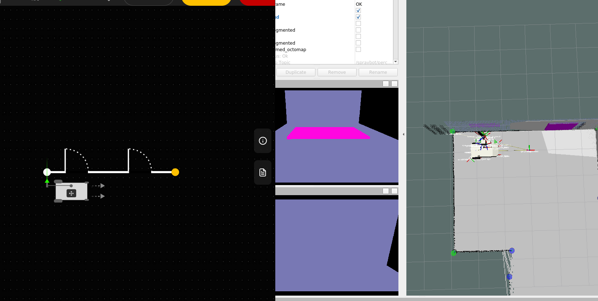

Documentation
Table of Contents
1. Set-Up
2. Start/Run
3. Debugging
1. Set-Up
-
Make sure the following repos are checked out under simulation branch feat-sim:
-
cb_sprayarm
- cb_base - is right now on
fix-sim-odometry - cb_bringup
- cb_config
- cb_core
- cb_vision
To checkout to the corresponding branch in all the repositories:
vcs custom --args checkout feat-sim
-
Make sure your bash environment has the variables
ARM_NUMBER,BASE_NUMBER, andROBOT_NUMBERset. -
Make sure both
simulationflags (config/general/process/simulationandconfig/sprayarm/settings/simulation) are set totrueinsidecb_config/process_configs/process.yaml -
To control via the GUI app, build the UI on your machine, and run it in a terminal window. In the cb_ui_app folder, run:
docker compose up -d
-
for docker.io to work, you'll need docker.io
-
In a browser, go to the address
http://localhost:5173to view the app ,and from the splash screen, go to the Settings, and change the Robot IP tolocalhost. If you press theStartbutton now, it should sayConnectedin the top left corner.
Odometry tuning
- config file for odometry (I.e. which odometry topics to use) is located in
/cb/base/cb_navigation/cb_perception/config/ukf/ukf_cfg_tuned.yaml
Camera Set-Up
- Inside
cb_sprayarm_description/urdf/modulesopen gazebo.xacro - This file configures the Gazebo simulation of the spray arm robot, defining materials, integrating ROS control, and setting up two depth cameras with specific parameters (FOV, resolution, update rate, clipping) and plugins to publish depth and point cloud data to ROS topics.
Camera semantic segmentation
- cb_gazebo_plugins/src/gazebo_ros_semantic_camera.cpp
Creating new worlds
- start gazebo standalone (so add. models I.e. Base, wheels etc. and their metrics dont get loaded in and saved in world file)
- if you start a pre-existing world make sure to remove the following line from the .world file before doing so:
<plugin name="ros_link_attacher_plugin" filename="libgazebo_ros_link_attacher.so"/>
Gazebo standalone start
/usr/bin/gazebo ~/catkin_ws/src/cb_base/cb_base_gazebo/worlds/room_90s.world
(removed gazebo alias - command gazebo works again)
- Place objects I.e. boxes - transform S/R/T (Scale/Rotation/Translation)
- After editing - save as new world. Edit Labels accordingly in the
.worldfile for semantic segmentation.
Labels are: wall; ceiling; floor; other; door; window; person; suv; sprayarm
room_90s_long_wall_hole_obstacles.world
- map gets selected inside
start_sim_world.launch

Current IP's/Addresses
192.168.1.101- local ip100.114.232.9- netbird iphttp://localhost:5173/- guihttp://172.18.0.2:5173/- gui - remote access?http://localhost:8081- gzwebhttp://192.168.1.101:8081- local gzweb accesshttp://100.114.232.9:8081- remote gzweb access
2. Connection & Start/Run
2.1 local
- Start Docker Container:
start_ros
- Join Docker Container from other sessions:
join_ros
How to start gazebo simulation pipeline
- Start the GUI-bridge in the first session:
bridge
launches: roslaunch cb_bringup startup_node.launch
- Start simulation pipeline in another docker session:
gazebo_pipe
launches: roslaunch cb_bringup start_all_gazebo.launch
- Set wall height under
settings for all wallsin the GUI - Wait until you see
[attach_sprayarm-9] process has finished cleanlybefore unpausing the Gazebo simulation. (~5 sec) - Access the GUI
rviz -d ~/catkin_ws/src/cb_bringup/config/rviz_config/3d_visualizer.rviz
2.2 remote (headless-mode)
ssh conbotics@192.168.1.101
ssh session #1
start_ros_hl
bridge
ssh session #2
join_ros_hl
export DISPLAY=:1
gazebo_pipe
local session
export ROS_MASTER_URI=http://192.168.1.101:11311
export ROS_IP=<<remote-ip>>
rviz
- for future comfort - add a function to your bash script:
roslocal() {
export ROS_IP=192.168.1.253
export ROS_MASTER_URI=http://192.168.1.101:11311/
echo "$ROS_IP"
echo "$ROS_MASTER_URI"
}
ssh session #3
start the simulation by entering the following ros call:
rosservice call /gazebo/unpause_physics
/ ... /pause_physics - to pause the simulation
- in Rviz set fixed frame inside the global options header to map
ssh session #4 (Gazebo streaming)
start the streaming client for Gazebo
gzweb
launches: cd ~/gzweb && npm start -p 8081
start/run multiple sims
m_start_ros jose 1
m_join_ros jose 1
- this will start the container from the same previously used image
- argument 1
josewill select the first workspace - maps ~/jose/catkin_ws to ~/catkin_ws inside the docker
- argument 2 sets the instance number - each container should start by using a custom instance number (TO-DO: add env. var. so users can see which instances are being used)
- tells the docker container to set different ports for GAZEBO, ROS & GZWEB communication
bridge
gazebo_pipe
m_gzweb
m_gzweblaunches: cd ~/gzweb && npm start -p $gport
TO-DO:
- assign individual ports inside the bridge for the gui
3. Debugging
For Debugging purposes - if a plotting tool is required - look no further and use PlotJuggler.
rosrun plotjuggler plotjuggler
Can plot any topic - odometry, covariances etc...
- great for analyzing causation and correlation
- an extensive config file for odometry testing is inside cb_bringup/config/plotjuggler/odometry_sim_2.xml
Related Issues
Issue #1 - Shift in Odometry
- Odometry "stutters/jitters" with bigger "hickups" occasionally happening
related warning/info: Getting odometry callbacks and found error
/spraybot/navigation/long_base_motion_server/spraybot/navigation/weighted_pid
Status:
- Still occurs occasionally
Issue #2 - Angular offset of Octomap
- angle error gets worse over time as the odometry "jitters" carry on
- there are parts of the message that show an accurate representation - likely stemming from older scans/messages
Affected topics: /spraybot/perception/slam_rt/cloud_map & /spraybot/perception/slam_rt/octomap_full
Status:
- I used plotjuggler to analyze the odometries behaviour - on the right is the resulting odometry post kalman fusion - on the left the individual topics that make up the fusion
- I found the wheel odometry was publishing a topic regarding rotation (yaw) that only published 0 - making the resulting odometry oscillate between 0 and another odometry part values
Affected topics: yaw; yaw velocity
- Wheel odom for yaw and vel.-yaw was included in the ukf_cfg_tuned.yaml
Issue #3 - Misallignment of robot towards wall
- paint process aborts with an error due to robot gradually aligning with the "warped" wall
- no feasible path can be found
Status:
- After testing the odometry topics and excluding possible faulty topics - the angular offset has vanished but the translatory offset still appears sometimes
- Error somewhat persists - does not occur as often
Issue #4 - Wall on the right of the robot shows 1 big hole
- to me this issue seems related to the arm "projection" removal - as that wall section starts off as being represented correctly for the most part


Status:
For reasons beyond me that does not seem to be a problem anymore.
Issue #5 - faulty segmentation
- arbitrary point classes are assigned - see image
- (used camera plugin:
libgazebo_ros_semantic_camera)
Status:
Fixed by editing the semantic camera plugin node code. Didnt register objects for segmentation if the Label had uppercase spelling.
New World including "windows" :
 - lower image still shows a faulty "projection" onto wall cloud but that is of no consquence ...
##### Sub-Issue: - Segmentation of arm in the image gets projected onto wall. I.e. Arm removal in image (masking) isint working yet. - Arm segmentation color-mapping set to wall color for now.
Issue #6 - missing camera alignment
-
robot does not drive parallel to the wall - instead it does the corner alignment and starts the paint process from there on out
Status:
- as of now, robot performs camer alignment - this was possibly due to
use_fake_statesbeing turned on in theprocess.yaml
- as of now, robot performs camer alignment - this was possibly due to
Issue #7 - dynamic collision checking -> arm planner fails
- we started to implement the dynamic collision in moveit using the
/spraybot/perception/slam_rt/cloud_map- the problem we encountered there was - that the octomap was build using the robots frame as the "static" map frame and the map was moving along with the robot

- we solved this by changing the virtual joint inside `cb_sprayarm.srdf.xacro` to type `floating`and by using the map frame
- resulted in the expected map building behaviour - but every other arm planning process broke because of that
changed files: sensor_manager.launch.xml, cb_sprayarm.srdf.xacro, sensors_3d.yaml
Additionally this resulted in heavily oscillating odometry

Minor Issues
Missing Base Model in gzweb
-
since base isint part of gazebos model inventory - it needs to be hosted as part of the local models
-
before re-deploying gzweb with the
-mflag - the GAZEBO_MODEL_PATH needs to be set and the models need to be in that directory - or atleast a simlink - preferrably of the package containing the meshes (no path change in urdf/xacro needed then)
Missing projection removal of sprayarm
- since the sprayarm enters the field of view occasioanlly - it gets projected onto the segmented image
- there is a projection removel mask in place - which isint yet working for the simulation
GUI shows Disconnected
- GUI shows on every second or so bridge startup Disconnected as status
- if you then close the bridge
Ctrl+cand let it properly close - the next bridge execution will then perform as expected
- requests such as refreshing the page are registered in bridge session
[bot_release-14] process has finished cleanly log file: /home/conbotics/.ros/log/ce145aae-a8f6-11f0-9293-849e56028e8b/bot_release-14*.log - seems to be a marker for the bridge being able to establish a connection
Gazebo not properly starting
- Link connector for gazebo pipeline does not always start
- gzweb cant be started - physics cant be unpaused
Active Warnings/Errors
Gazebo related:
libGL error: failed to create dri screen libGL error: failed to load driver: nouveau
[ERROR] [/gazebo:116]: No p gain specified for pid. Namespace: /sprayarm/gazebo_ros_control/pid_gains/m1_joint - all throughout joints m1 to m5
[ERROR] [/gazebo:116]: No p gain specified for pid. Namespace: /spraybot/base/gazebo_ros_control/pid_gains/spraybot/base/drive_wheel_left_joint -for both left and right wheel joint
Others:
[INFO] [/spraybot/navigation/weighted_pid:394]: Getting odometry callbacks and found error.
[INFO] [/spraybot/navigation/long_base_motion_server:407]: Getting odometry callbacks and found error.
[WARN] (2025-09-26 13:07:36.470) SensorData.cpp:762::uncompressDataConst() Requested laser scan data, but the sensor data (42) doesn't have laser scan.
TO-DO:
Focus:
I will conclude with the issues that are the most pressing and that still persist:
Odometry
Wheel odometry for translatory x and y values slowly converges (either up or down) odometry output of ICP loc. gets too much focus/importance as fusion preferrs ICP values - covariances?
Tasks:
- include gzweb in startup node of gazebo (gazebo needs to be launched beforehand)
- further analyze odometry topics and document
- fix model hosting for gzweb (gazebo models are cloned into gazebo_models)
- create a new world including obstacles and feasible wall changes
- GPU ray sensor -
gpu_ray- gpu based ray casting/sensoring - fix arm planning
- fails since
Issue 7
Know-How:
How to convert modular URDF (I.e. multiple xacros) into .SDF
- .sdf folder structure (preferred type for gzweb)
-
GAZEBO_MODEL_PATH/cb_base/
- meshes
- materials
model.configcb_base.sdf
-
model paths in sdf/urdf/xacro have to be relative to GAZEBO_MODEL_PATH
<mesh filename="model://..."/>- convert xacro -> urdf -> sdf
xacro cb_base.xacro use_link_attacher:=false > cb_base.urdf
.OR.
xacro cb_base.xacro robot_description:=spraybot/base/robot_description namespace:=spraybot/base sensors_ns:=spraybot/sensors use_link_attacher:=false > cb_base.urdf
gz sdf -p cb_base.urdf > cb_base.sdf
- set:
export GAZEBO_MODEL_PATH=~/catkin_ws/src/cb_base/cb_base_description/models
- python not set inside Container so use python3 as default:
sudo ln -s /usr/bin/python3 /usr/bin/python
- navigate to gzweb - use:
npm run deploy --- -m
- sources local and remote models
GZWEB Set-Up
(TO-DO: needs to be included in dockerfile) - DONE
GAZEBO_MODEL_PATHneeds to be set prior to using the deploy command- all subsequent builds dont need the
-mflag - it grabs all the models both locally and from the remote model database. - GZWEB needs the "unique" models I.e. the ones that werent sourced/build from gazebo assets in a specified location to host them. (Sim link should be enough)
- Affected are the .STL files in the meshes directory
- both
body.xacroandcaster_wheel.xacro
sudo apt install libjansson-dev imagemagick
curl -o- https://raw.githubusercontent.com/nvm-sh/nvm/v0.35.3/install.sh | bash
source ~/.bashrc
nvm install 8
(use 10 - 8 didnt work for me...)
git clone https://github.com/osrf/gzweb && cd ~/gzweb
git checkout gzweb_1.4.1
source /usr/share/gazebo/setup.sh
npm run deploy --- -m
GZWEB Usage
cd ~/gzweb
npm start -p 8081
(idk why but port 8080 is not open for use)
hosted site: http://localhost:8081/
Security:
- Advisable to create tunnel - tunnel vnc connection over SSH.
On client:
ssh -L 5901:localhost:5901 <username>@<server_ip>
Connect then via VNC client
vncviewer localhost:1 .OR. vncviewer localhost::5901
kill session vncserver -kill :1
Make vnc session autostart at boot - Systemd
Connect via ubuntu remote client
For vncviewer
sudo apt install tigervnc-viewer
vncviewer <host_ip>:5901
vncviewer 100.114.232.9:5902 - For vncserver 2
For Remmina
sudo apt install remmina remmina-plugin-vnc
remmina
-> new connection -> Protocol: VNC - Virtual Network Computing (Server:
Server Side Set-Up:
nano ~/.vnc/xstartup
!/bin/bash
unset SESSION_MANAGER unset DBUS_SESSION_BUS_ADDRESS exec startxfce4
chmod +x ~/.vnc/xstartup
light-locker issues
mkdir -p ~/.config/autostart
cp /etc/xdg/autostart/light-locker.desktop ~/.config/autostart/
nano ~/.config/autostart/light-locker.desktop
Hidden=true